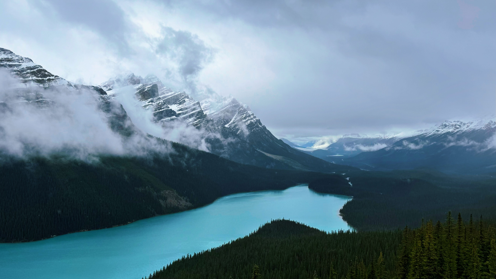
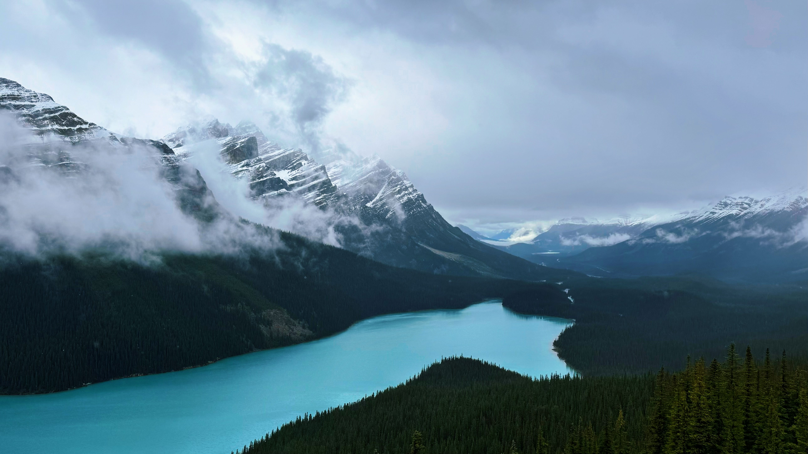

02 / PHOTOGRAPHY
My photography portfolio showcases a wide variety of natural landscapes and human narratives, from mountain lakes in nature to galaxies and moons in the night sky. Each photograph demonstrates the profound interaction between light, shadow and color. I love capturing those rare and beautiful moments that elevate nature photography to art.


 
